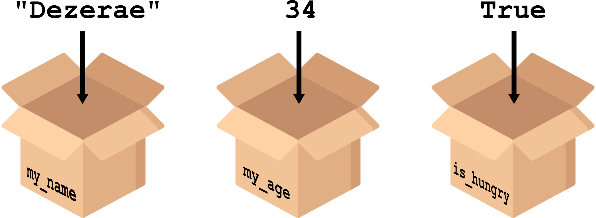

my_name = "Dezerae"
my_age = 628 - 594Variables
Python stores information in named containers called variables.

Values are assigned to a unique variable name using the = operator, where the name of the variable is on the left and the variable’s value is on the right.
You can see what python has stored for a given variable by passing it to the print() function:
my_name = "Dezerae"
print(my_name)Dezerae
Variables must be created before they are used. If a variable doesn’t exist yet, or if the name has been misspelled, Python reports an error.
Naming conventions
There are a few rules, and a few best practices when it comes to naming variables.
- 🎗️ should be meaningful so others (and future you!) will intuitively know what it is
- ✅ can only contain letters, digits, and underscores
- ⛔ cannot start with a digit
- 🔡 are case sensitive (
age,AgeandAGEare three different variables)
The Python style guide PEP-8 recommends lowercase letters for function and variable names, and
snake_case for descriptive naming as opposed to CamelCase.
Variables are available once created until the kernel is stopped or restarted. This means that in Jupyter notebooks, variables persist between cells which can cause weird bugs if cells are executed out of order!
Types
All values have a type in python, which their containers (variables) inheret.
So far, we have seen:
Integer (
int): represents positive or negative whole numbers.Floating point number (
float): represents real numbers.Character string (
str): a collection of text.Boolean (
bool): either True or False
Numerical operations
Numerical variables behave (mostly!) as you would expect.
We can perform mathematical operations with int and/or float variables as if they were values.
x = 11
print(f'half {x} is', x / 2.0)
print(f'{x} squared is', x ** 2)
print(f'one more than {x} is', x + 1)
print(f'7 less than {x} is', x - 7)half 11 is 5.5
11 squared is 121
one more than 11 is 12
7 less than 11 is 4
Python has three types of division operator:
/ performs floating-point division, // performs integer (whole-number) floor division, % (or modulo) returns the remainder from integer division.
String operations
Strings can also be manipulated by the + and * operators.
my_name = 'Dezerae' * 5 + ' ' + 'Cox'
print(my_name)DezeraeDezeraeDezeraeDezeraeDezerae Cox
Strings also have a series of special methods.
Sometimes numbers become strings which need to be converted:
print(1 + int('2'))
print(str(1) + '2')3
12
This is a very common issue when cleaning real-world data. It is always a good idea to check if your numerical variables are actually numerical!
Notes of caution
Variables are only updated by reassignment, and are assigned in order.
variable_one = 1
variable_two = 5 * variable_one
variable_one = 2
print('first is', variable_one, 'and second is', variable_two)first is 2 and second is 5
Where reasonable,
float() and int() will convert a string. However, if the conversion doesn’t make sense an error will occur.
print("string to float:", float("3.4"))string to float: 3.4print("float to int:", int(3.4))float to int: 3print("string to float:", float("Hello world!"))ValueError: could not convert string to float: 'Hello world!'In practice
Exercises
1.6 Creating and printing variables
1.7 Numerical operations
1.8 String operations
1.9 Converting between types